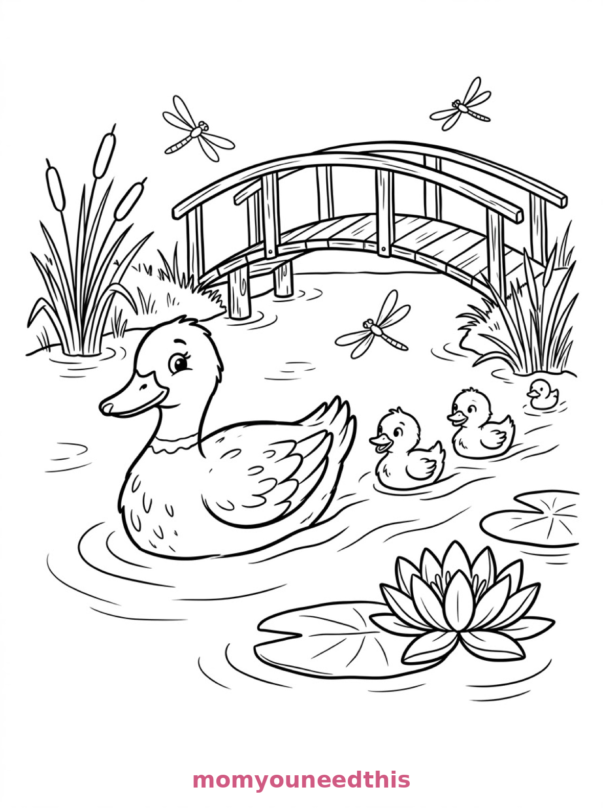
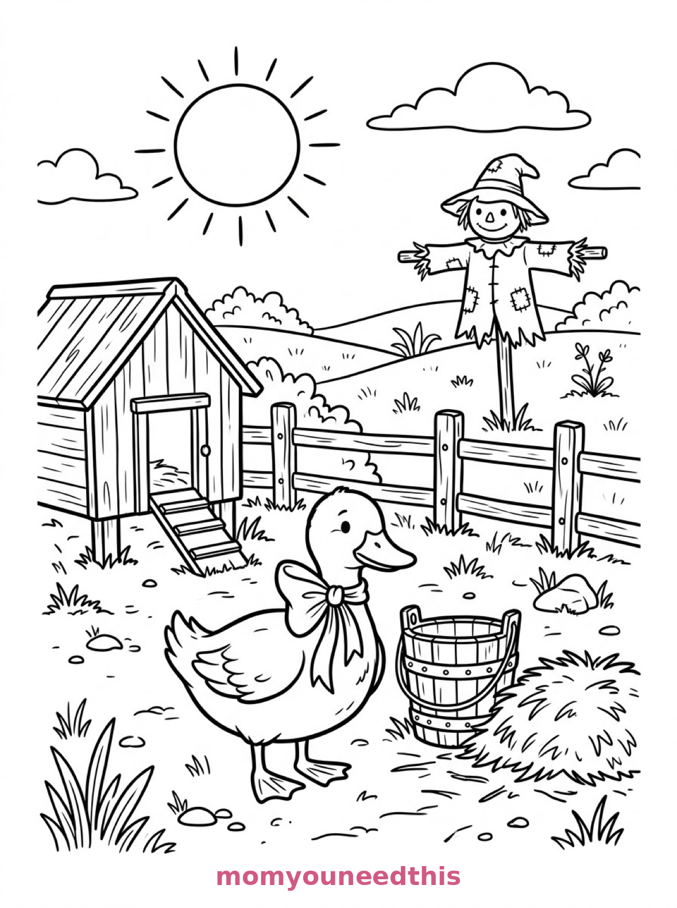
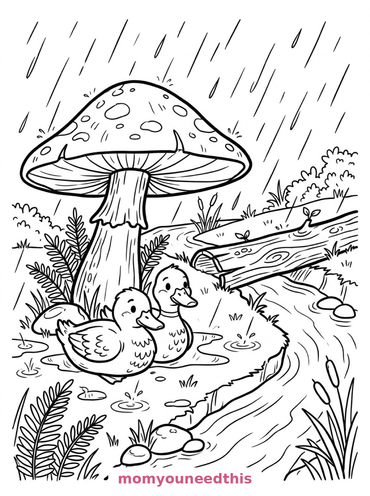

Free Duck Coloring Pages Pond, Farmyard & Rainy Day Printables
These free duck coloring pages bring three ducky days to your table — a mother duck leading her ducklings across a pond, a ribboned farmyard duck under the sun, and two ducks sheltering from the rain under a mushroom. Download the set below, print at home on letter-size paper, and let the coloring fun begin. No signup needed.
Last updated: October 23, 2026
Quick Answer
Yes — this page has three free printable duck coloring pages: a mother duck with three ducklings on a village pond, a farmyard duck with a neck ribbon by a bucket and scarecrow, and two ducks sheltering under a mushroom in the rain. Bold outlines and big spaces, made for little hands. Download, print on letter-size paper, and hand over the crayons — no signup, no cost.
At a Glance
- Ages: 3–8
- Pages: 3 free printables
- Format: Print at home, letter size
- Cost: Free, no signup
- Supplies: Crayons or markers
- Time: 10–20 minutes
🦆 Mother Duck and Ducklings on the Pond Coloring Page

🎨 Download Your Free Duck Pond Coloring Page
A mother duck leads three ducklings across a village pond, with lily pads, a blooming water lily, tall reeds, a wooden footbridge and dragonflies — bold outlines, big spaces, zero signup.
⬇️ Download Free Duck Pond Page 🖨️ Print Duck Pond Page🎁 Free printable for preschoolers & kids
🐤 Farmyard Duck with a Ribbon Coloring Page

🎨 Download Your Free Farmyard Duck Coloring Page
A duck in a farmyard wearing a ribbon round its neck, standing by a wooden bucket and a pile of straw, with a henhouse, fence and scarecrow under a big round sun — bold outlines, big spaces, zero signup.
⬇️ Download Free Farmyard Duck Page 🖨️ Print Farmyard Duck Page🎁 Free printable for preschoolers & kids
🌧️ Two Ducks in the Rain Coloring Page

🎨 Download Your Free Rainy Ducks Coloring Page
Two ducks shelter from the rain beneath a broad mushroom at the edge of a stream, with splashing raindrops, puddles, ferns, pebbles and a fallen log bridge — bold outlines, big spaces, zero signup.
⬇️ Download Free Rainy Ducks Page 🖨️ Print Rainy Ducks Page🎁 Free printable for preschoolers & kids
More Coloring Pages
Tap any picture to open its theme page and download the free printable.


🦆 How To Use This Page
- Browse the three designs and pick the duck scene your child will love most.
- Tap download or print under that design — the file opens full-size, ready for letter-size paper.
- Print an extra copy of the duckling pond — it is the sweetest page in the set and great for a matched pair.
- Color together with crayons or markers and quack along.
💧 Why Kids Love Duck Coloring Pages
Ducks are funny, waddly, splashy — exactly what a coloring page needs. Each design here shows ducks doing something: leading ducklings across a pond, posing in a farmyard with a ribbon, huddling under a mushroom in the rain. Kids don't just color the ducks, they step into the little stories around them.
Duck pages are also secretly great for color practice. Water that can be blue or green or purple, ducks that can be yellow, white, gray or brown, a sun that has to be somewhere in the sky — every page asks a few happy decisions without a single wrong answer.
🦆 Meet the Three Duck Scenes on This Page
The ducklings on the pond. A mother duck leads three ducklings across a village pond, with lily pads and a blooming water lily beside them, tall reeds and a wooden footbridge behind, and dragonflies hovering above the water. The four ducks are big and simple — perfect for the youngest colorers — while the bridge, reeds and dragonflies give older kids plenty to do.
The farmyard duck with the ribbon. A duck in a farmyard wears a ribbon round its neck and stands beside a wooden bucket and a pile of straw, with a henhouse, a fence and a scarecrow in the field behind under a big round sun. The ribbon is the fun detail: kids can color it red, spotty, striped — whatever pattern they imagine.
The ducks in the rain. Two ducks shelter from the rain beneath a broad mushroom at the edge of a stream, raindrops splashing into puddles around them, with ferns, smooth pebbles and a fallen log bridge crossing the water behind. It is the coziest page in the set — a lovely one for a gray day when coloring is the best plan.
✏️ Duck Coloring Tips
- Try real ducks and story ducks. Real ducks are yellow, white, gray or mallard green and brown — but a purple duck with orange feet is a perfectly good coloring page too.
- Color the water last. Ducks first, pond second: a light blue or green wash around the ducks (side of the crayon, soft pressure) makes them pop right off the page.
- Spot the extra creatures. Dragonflies, a water lily, a scarecrow, pebbles — hunting for the small extras on each page is half the fun of a duck page.
- Name the three ducklings. The pond page has a mother duck and three ducklings — naming all four turns the page into a family portrait.
🦆 Coloring Pages for Different Ages
For ages 3 to 4, start with the ducklings on the pond. Four big duck shapes with bold outlines are all a little colorer needs, and the pond can be one happy sweep of blue.
For ages 5 to 6, the farmyard duck is the sweet spot. The duck is still big and friendly, but the bucket, straw, henhouse, fence and scarecrow add real choices and a proper scene to build.
For ages 7 to 8, hand over the rainy-day page. The mushroom, the ripples, the pebbles and the log bridge reward careful coloring, and older kids love the storytelling challenge of making the rain look wet.
💧 More Duck Fun After Coloring
Make it a duck day: after coloring, act out the pond scene — line the family up by size, give everyone a quack voice, and march them across the living room floor. The pages become the backdrop for the play.
For more farm animals to color, visit the farm coloring pages — barns, cows, pigs and chickens waiting for crayons. And for the pond life around the ducks, the animal coloring pages have plenty of feathered and furry friends.
🔗 More Free Printables You’ll Love
- Free Farm Coloring Pages Barn animals and farm scenes to print and color.
- Free Animal Coloring Pages Free printable animal coloring pages for little learners.
- Free Bunny Coloring Pages Garden, burrow and orchard bunnies to print and color.
- All Free Coloring Pages Browse every free coloring page on the site, organized by theme.
❓ Duck Coloring Pages FAQ
Are these duck coloring pages really free?
Yes — all three designs on this page are free original printables from MomYouNeedThis. Download them, print them at home, and color — no signup and no cost.
What ages are these coloring pages best for?
Kids ages 3 to 8 get the most from this set. The duckling pond is the gentlest start for younger children, while the farmyard and rainy-day scenes have the detail older kids enjoy.
How do I print a coloring page?
Tap the download button under the design you want, then print the file on regular letter-size paper. The print button opens the full-size page in a new tab if you prefer to print from there.
Is there a baby duck (duckling) coloring page in this set?
Yes — the first design shows a mother duck leading three ducklings across a village pond, with lily pads, a footbridge and dragonflies around them.
Can I make a duck coloring book from these pages?
Yes — print all three designs, stack them in order, and staple along the left edge. Add a cover sheet with your child's name for a finished homemade duck coloring book.